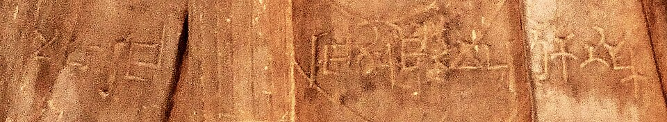
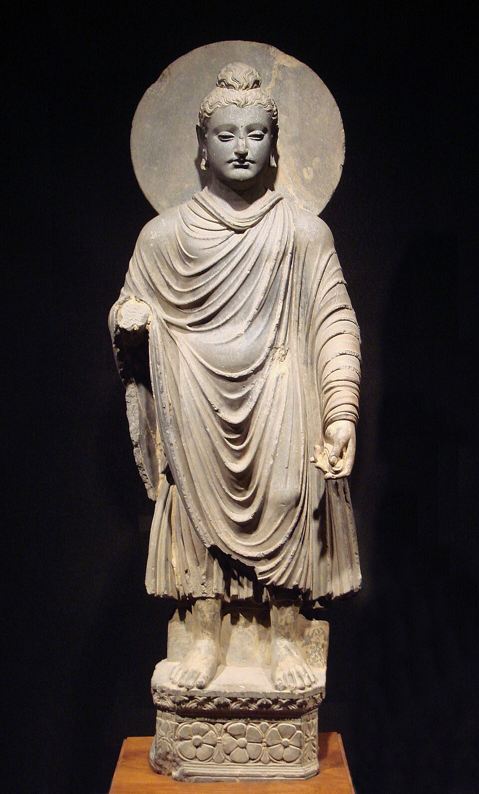

Image Viewer
Full Archaeological & Inscriptional Inspection
100%
Ancient Indian History • Module 6: Post-Maurya & Sangam Age
The fragmentation of the Mauryan Empire sparked an era of unprecedented intercultural exchange: native dynasties (Shungas, Satavahanas, Chedis) revived Brahmanism and Jainism, while foreign ruling houses (Indo-Greeks, Shakas, Kushanas) integrated Indian religion and established international trade routes via the Silk Road. Concurrently, South India witnessed the classical dawn of the Sangam Era.

Spotted red sandstone portrait with title 'Devaputra' (Son of God), preserved at Mathura Govt Museum.
The Shungas, Kanvas, Satavahanas (Andhras), and Chedis of Kalinga.
Founded by Pushyamitra Shunga after slaying Brihadratha. Performed two Ashvamedha sacrifices officiated by Patanjali (author of *Mahabhashya*).
Greek ambassador Heliodorus visited the 9th Shunga king Bhagabhadra at Vidisha and dedicated a Garuda pillar to Lord Vasudeva.
Founded by Vasudeva Kanva after assassinating the last Shunga ruler Devabhuti. Ruled for 45 years across 4 kings (Vasudeva, Bhumimitra, Narayana, Susharman).
The last ruler Susharman was eliminated by the rising power of the Satavahana (Andhra) dynasty.
Founded by Simuka with capital at Pratishtana (Paithan) on the Godavari. Official language was Prakrit (Brahmi script).
Founded by Mahameghavahana. Its greatest sovereign was Kharavela, an ardent patron of Jainism who excavated residential caves for monks at Udayagiri and Khandagiri.
Engraved in Brahmi script and Prakrit language, records Kharavela’s military campaigns, canal repairs, and retrieval of the Jina idol from Magadha.
Invasions, numismatic revolutions, and imperial expansion connecting India to Central Asia.
Demetrius I entered India in 190 BC. The most renowned ruler was Menander (Milinda, 165–145 BC) with his capital at Sakala (modern Sialkot).
Migrated from Central Asia. The most famous branch was the Western Kshatrapas of Ujjain, spearheaded by Rudradaman I (130–150 AD).
Originated from the Yueh-chi nomadic tribe. Kujula Kadphises issued copper coins, Vima Kadphises issued gold coins, and Kanishka I (78–101 AD) expanded the empire across Central Asia and the Gangetic valley.
A definitive comparative analysis of the two dominant sculptural schools under Kushan patronage.

Carved from blue-grey schist sandstone; Greek realism applied to Buddhist themes.
| Feature | Gandhara School of Art | Mathura School of Art |
|---|---|---|
| Influence | Greco-Roman / Hellenistic influence (Western classical) | Purely indigenous; evolved from ancient Yaksha statues |
| Medium / Stone | Blue-grey schist stone and stucco (lime plaster) | Spotted red sandstone from Sikri quarries |
| Religious Scope | Exclusively Buddhist (Mahayana icons) | All three: Buddhism, Jainism (Ayagapatas), Brahmanism (Vishnu/Shiva) |
| Depiction of Buddha | Wavy hair, Apollo-like sharp nose, realistic drapery, moustache | Shaven head or curls, smiling face, energetic posture, transparent dhoti |
| Halo / Prabhavali | Plain or modest halo behind the head | Elaborately ornamented and carved floral halo |
| Key Patrons | Shakas and Kushanas (NWFP & Punjab) | Kushanas (Central & Northern India) |
The three Tamil academies (*Sangams*), the triumvirate of Cheras, Cholas, and Pandyas, and classical epics.
Capital at Vanji (Karur) with major ports at Muziris (Cranganore) and Tondi. Traded spices, ivory, and pearls with the Roman Empire.
Greatest Chera sovereign; established the Pattini Cult (worship of Kannagi as the ideal chaste wife) using stones brought from the Himalayas.
Capital at Uraiyur (famed for cotton trade) and later at the port city of Puhar (Kaveripattinam).
Greatest early Chola ruler; defeated a confederacy of Cheras, Pandyas, and 11 minor chieftains at the Battle of Venni. Built the Grand Anicut (Kallanai dam) on the Cauvery.
Capital at Madurai; chief port at Korkai (famous for pearls). Megasthenes noted that their kingdom was ruled by a woman and celebrated for its pearls.
Won the famed Battle of Talaiyalanganam against the combined forces of Cheras and Cholas. Figure in the epic *Silappadikaram* who died of grief on realizing his miscarriage of justice.
No surviving books; submerged under the sea.
Only Tolkappiyam (Tamil grammar treatise by Tolkappiyar) survived.
Yielded the canonical anthologies: Ettutogai (8 anthologies) and Pattupattu (10 idylls).
Story of Kovalan, Kannagi, and courtesan Madhavi; founding text of the Pattini cult.
Narrates adventures of Manimekalai, daughter of Kovalan and Madhavi, who embraced Buddhism.
Masterpiece containing 1330 couplets divided into Dharma (*Aram*), Artha (*Porul*), and Kama (*Inbam*).
Test your command over Indo-Greeks, Kushanas, Rudradaman, and Sangam epics.
Loading flashcard...
Click card to reveal answerLoading answer...
Click to flip backLoading quiz question...
Full Archaeological & Inscriptional Inspection